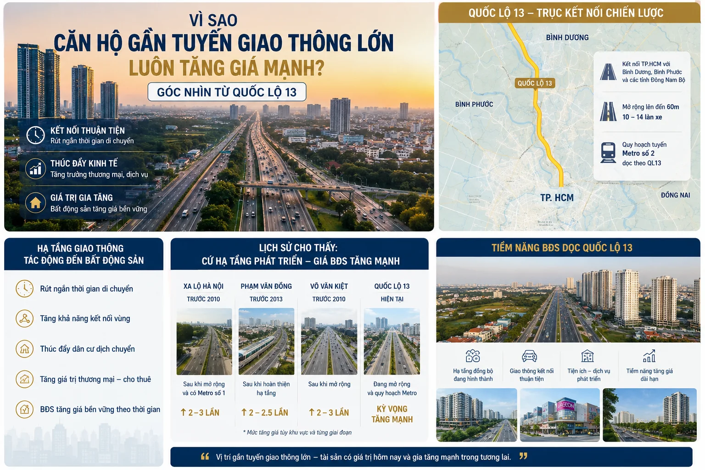

Quốc lộ 13 là một trong những trục kết nối quan trọng nhất giữa TP.HCM, Thuận An, Thủ Dầu Một, Bình Phước và các khu công nghiệp lớn của vùng Đông Nam Bộ. Với nhà đầu tư căn hộ, câu hỏi không nên dừng ở “dự án có gần Quốc lộ 13 không”, mà phải đi sâu hơn: đoạn hạ tầng nào đã triển khai, đoạn nào còn là kỳ vọng, và giá mua hiện tại đã phản ánh bao nhiêu phần tiềm năng tương lai.

1. Quốc lộ 13 không chỉ là đường giao thông, mà là trục tái định vị đô thị
Trong nhiều năm, Bình Dương được nhìn như thị trường vệ tinh của TP.HCM. Nhưng khi Quốc lộ 13 được nâng cấp đồng bộ hơn, vai trò của trục này thay đổi: từ tuyến di chuyển công nghiệp trở thành hành lang đô thị - thương mại - dịch vụ.
Đoạn qua Bình Dương đã được mở rộng theo hướng 6 - 8 làn ở nhiều khu vực, trong khi đoạn TP.HCM từ Bình Triệu đến Vĩnh Bình đang được chuẩn bị theo phương án mở rộng quy mô lớn. Khi “nút cổ chai” phía TP.HCM được xử lý, thời gian di chuyển từ Thuận An về trung tâm thành phố sẽ có cơ sở cải thiện rõ hơn.
Góc nhìn KINGMANS: bất động sản không tăng giá vì một con đường đẹp hơn. Bất động sản tăng giá khi con đường đó làm thay đổi hành vi sống, hành vi thuê và hành vi kinh doanh của khu vực.
2. Cơ chế tăng giá: từ kết nối giao thông đến thanh khoản tài sản
Tiềm năng tăng giá dọc Quốc lộ 13 có thể nhìn qua bốn lớp tác động:
- Rút ngắn thời gian di chuyển: khi thời gian vào TP.HCM dễ dự báo hơn, người mua ở thực sẵn sàng chấp nhận sống xa trung tâm hơn để đổi lấy diện tích, tiện ích và tổng giá trị căn hộ hợp lý.
- Tăng mật độ thương mại: đường lớn kéo theo bán lẻ, văn phòng dịch vụ, giáo dục, y tế và hệ tiện ích phục vụ cư dân. Đây là nền tảng giúp khu vực có sức sống thật, không chỉ là khu căn hộ để ở.
- Mở rộng tệp khách thuê: Thuận An và Dĩ An có lực cầu từ chuyên gia, quản lý, kỹ sư và nhóm lao động thu nhập ổn định. Nếu dự án có quản lý tốt, khoảng cách đến khu công nghiệp và trung tâm thương mại hợp lý, dòng tiền thuê sẽ dễ kiểm chứng hơn.
- Tái định giá so với TP.Thủ Đức: khi khoảng cách sử dụng được rút ngắn, căn hộ Bình Dương trên trục Quốc lộ 13 không còn chỉ được so với mặt bằng tỉnh, mà bắt đầu được so với các khu cửa ngõ TP.HCM.
3. Bảng đọc nhanh: dự án nào hưởng lợi nhiều hơn?
| Nhóm dự án | Lợi thế khi QL13 hoàn thiện | Điểm cần kiểm tra |
|---|---|---|
| Mặt tiền hoặc cách QL13 1 - 2 km | Dễ nhận diện, thuận tiện kết nối, có lợi thế thương mại và cho thuê. | Tiếng ồn, bụi, lối vào dự án, khả năng kẹt xe giờ cao điểm và tổng giá mua đã bị đẩy lên chưa. |
| Gần nút giao, cầu vượt, trung tâm thương mại | Thanh khoản tốt hơn vì phục vụ cả nhu cầu ở, thuê và kinh doanh dịch vụ. | Pháp lý, tiến độ bàn giao, phí quản lý và chất lượng vận hành sau khi nhận nhà. |
| Nằm sâu hơn nhưng kết nối nhanh ra QL13 | Có thể có giá vào mềm hơn, môi trường sống yên tĩnh hơn. | Thời gian di chuyển thực tế, đường nội khu, hạ tầng tiện ích xung quanh và lực thuê thật. |
4. Không nên mua chỉ vì “ăn theo hạ tầng”
Hạ tầng là chất xúc tác, nhưng không thay thế được pháp lý, tiến độ và dòng tiền. Một dự án nằm gần Quốc lộ 13 vẫn có thể kém hiệu quả nếu giá bán đã vượt quá mặt bằng hợp lý, hồ sơ pháp lý chưa đủ rõ, tiến độ xây dựng chậm hoặc sản phẩm không phù hợp nhu cầu thuê tại khu vực.
Đặc biệt, các thông tin về metro, đường trên cao hoặc những kết nối dài hạn nên được đưa vào kịch bản kỳ vọng, không nên xem là cơ sở định giá chính. Nhà đầu tư an toàn phải mua được tài sản vẫn hợp lý ngay cả khi các hạng mục tương lai chậm hơn dự kiến.
5. Checklist KINGMANS trước khi xuống tiền căn hộ dọc Quốc lộ 13
- So sánh tổng giá trị căn hộ, không chỉ giá/m², với các dự án cùng trục.
- Đi thực tế vào giờ cao điểm để kiểm tra thời gian di chuyển về TP.HCM, TP.Thủ Đức, Dĩ An và Thủ Dầu Một.
- Đối chiếu pháp lý: quy hoạch 1/500, giấy phép xây dựng, điều kiện mở bán, bảo lãnh ngân hàng và tiến độ thực tế.
- Khảo sát giá thuê dự án đã bàn giao trong bán kính 2 - 3 km để tính lợi suất cho thuê.
- Lập bảng dòng tiền sau ưu đãi lãi suất, vì giai đoạn thả nổi mới là bài kiểm tra thật của khoản vay.
- Ưu tiên sản phẩm có khả năng bán lại cho nhiều nhóm khách: mua ở, tích sản trung hạn và khai thác cho thuê.
6. Một số dự án nên đưa vào danh sách theo dõi
Với nhóm khách hàng quan tâm Thuận An, các dự án như Symlife - Symphony of Life, A&T Sky Garden, The Emerald Boulevard hoặc các dự án nằm gần trục Lái Thiêu - Vĩnh Phú nên được đặt trong cùng một bảng so sánh: vị trí, tổng giá, pháp lý, tiến độ, lịch thanh toán và khả năng khai thác thuê.
Đây cũng là lý do KINGMANS thường không đề xuất dự án ngay từ đầu. Chúng tôi bắt đầu bằng ngân sách, khẩu vị rủi ro, kế hoạch nắm giữ và yêu cầu dòng tiền của khách hàng; sau đó mới chọn danh mục phù hợp.
Kết luận: QL13 là câu chuyện lớn, nhưng điểm mua mới quyết định lợi nhuận
Quốc lộ 13 có đủ nền tảng để tiếp tục là một trong những trục tăng trưởng quan trọng của bất động sản Bình Dương trong giai đoạn 2026 - 2030. Tuy nhiên, lợi nhuận không đến từ việc mua bất kỳ sản phẩm nào gần tuyến đường này. Lợi nhuận đến từ việc chọn đúng đoạn, đúng dự án, đúng pháp lý, đúng giá vào và đúng phương án vốn.
Với nhà đầu tư cá nhân, chiến lược hợp lý nhất là xem Quốc lộ 13 như một “bộ lọc vị trí”, sau đó dùng thêm các bộ lọc về dòng tiền thuê, thanh khoản và pháp lý để ra quyết định.
Câu hỏi thường gặp
Căn hộ gần Quốc lộ 13 có chắc chắn tăng giá không?
Không. Gần hạ tầng lớn chỉ là một lợi thế. Giá trị còn phụ thuộc vào pháp lý dự án, giá mua ban đầu, tiến độ, chất lượng vận hành và nhu cầu thuê thật.
Nên mua dự án mặt tiền QL13 hay dự án nằm sâu hơn?
Dự án mặt tiền có lợi thế nhận diện và thương mại, nhưng có thể chịu giá cao, tiếng ồn và lưu lượng xe lớn. Dự án nằm sâu hơn có thể yên tĩnh và giá mềm hơn, miễn là kết nối ra QL13 thuận tiện.
Có nên mua theo kỳ vọng metro dọc QL13?
Nên xem metro là yếu tố cộng thêm trong kịch bản dài hạn. Quyết định mua vẫn cần dựa trên hạ tầng đã hiện hữu hoặc đang triển khai rõ ràng, pháp lý dự án và dòng tiền cá nhân.